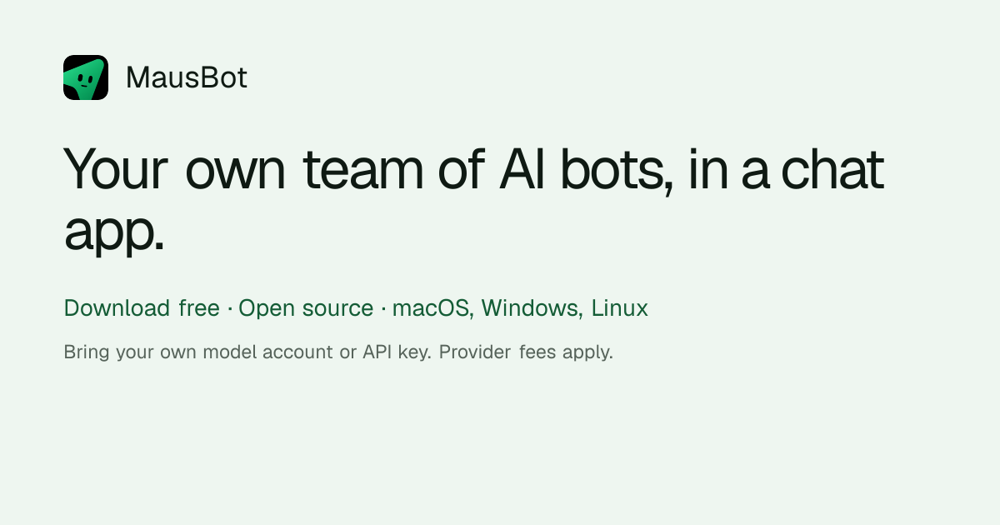

Instagram｜OpenClaw、Hermes 與 MausBot：把既有 Agent 編成團隊的定位比較

一句話摘要
這支 Reel 的重點不在「誰最好」，而是把角色拆開：聊天入口、可累積脈絡的 agent 與多 agent 編排層可以並存。真正要驗證的是每一層需取得哪些帳號、資料與執行權限，而不是只看同一張比較圖。
Reel 可見內容
帳號 `buildwithomkar` 的影片長約 70.9 秒，公開文案稱 OpenClaw、Hermes、MausBot 並非競品，而是三種不同事物。擷取時以約第 5、35、58 秒畫面交叉確認：
- 初段列出 OpenClaw、Hermes、MausBot 三者。
- Hermes 畫面呈現桌面 app、審核／批准介面與「需要人類確認」的敘事；這是影片內容，非本次重新驗證的 Hermes 功能規格。
- MausBot 畫面明確自稱為「既有 agents 的 orchestrator」，以 Chief of Staff 方式協調 Research、Design、Build 等工作，並列出 Claude Code、Codex、Grok、Hermes、OpenClaw。
- 影片暗示前三者可形成「one team」，但未提供版本、安裝方式、連接器範圍、相容性測試或安全模型，故不應將畫面中的 WORKING 狀態理解為所有環境皆可直接使用。
第一方可確認的 MausBot 範圍
MausBot 官網將產品定位為開源的 Grok Bot alternative，並說明使用者需自帶 AI 帳號或 API key，供應商的費用與使用限制仍會適用。網站可確認的工作方式包括：
- 每個 bot 可有不同任務、模型與執行環境，在使用者自己的機器上平行執行。
- 可從已安裝的 Claude、Codex、Grok CLI 等來源使用既有登入或訂閱；網站稱本機 harness 位於 127.0.0.1，將不同供應商的事件統一處理。
- 支援 Gmail、Slack、GitHub、Notion、Linear 等連接情境，但 OAuth、資料存取範圍與每個 connector 的權限仍需逐一檢查。
- GitHub 專案 `milind-soni/OpenMausBot` 在本次擷取時標示 Apache License 2.0；星數、平台支援、模型選項與功能均為會變動的專案資訊。
不是「免費就無成本」
「開源」描述的是程式碼授權，不等於雲端運算、模型 API、第三方 connector 或帳號訂閱都免費。即使使用既有 CLI 登入，仍要確認所屬訂閱方案是否允許該類自動化與持續背景任務，並留意額度、帳單、資料保留與服務條款。
導入前檢核表
- 先確認要解決的是單一 agent 工作流，還是多 agent 的分工、排程與驗收問題。
- 以獨立、低敏感帳號試做一項唯讀任務；不要一開始連接信箱、付款、正式 GitHub 寫入權限或客戶資料。
- 逐一查看 agent 的工具權限、OAuth scope、是否能審核或中止、以及是否可保留完整執行紀錄。
- 將「影片顯示可以協作」與「你的作業系統、版本、登入權益與 connector 真的相容」分開驗證。
- 上線前對寫入、傳送、購買、部署、刪除等不可逆行為保留人工批准。
原始與查核連結
- Instagram Reel：https://www.instagram.com/reel/DeUoo5qNMIW/
- MausBot 官網：https://mausbot.com/
- OpenMausBot GitHub：https://github.com/milind-soni/OpenMausBot
- GitHub LICENSE：https://github.com/milind-soni/OpenMausBot/blob/main/LICENSE
來源擷取紀錄：`source-archive/2026-10-10-instagram-buildwithomkar-openclaw-hermes-mausbot.json`